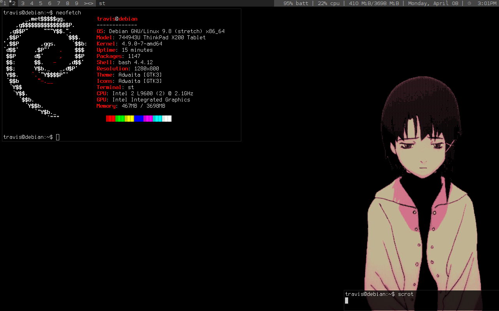
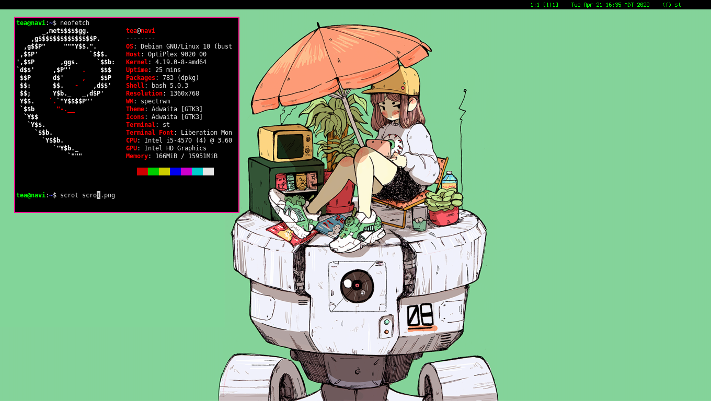
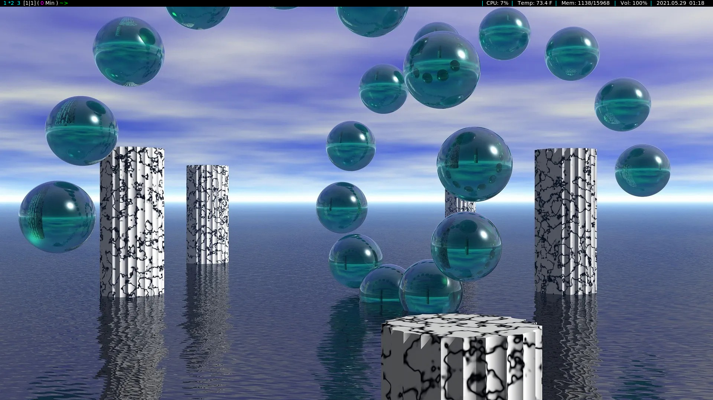
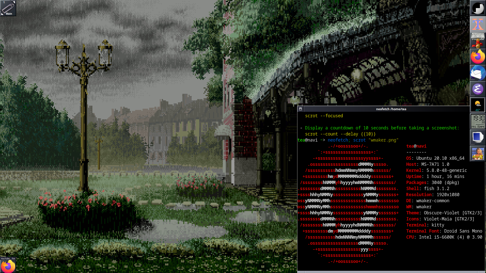

Minimal + WM is Overrated
As someone who has been using been using Linux for years, of course I got into using minimal setups focused around window managers instead of using desktop environments. As time has gone on, I really feel like they are not worth the effort and a desktop environment is overall better (your mileage with WMs and opinion may be different, but I would like to post my thoughts on here; do with them as you will). And no, this is not an Arpil Fool's joke :P
Reasons why I don’t like WMs as much anymore (Cons):
- Takes way too long to get things configured, and it still will never be perfect
- A waste of time, could be doing other things on my PC (although some people do enjoy all the configuration, I do not)
- Everything being keyboard-centric has its problems (steep learning curve, tiling layouts can cause issues with apps, some layouts are overly complex)
Although there are some Pros:
- Light on resources, so great for older machines
- The keyboard-centric nature is great for laptops(I only use laptops in the field on IT service calls)
- When fully set up, it can look really cool: r/unixporn
Since I primarily use desktop and do not use machines that can not support modern desktop environments, the reasons to use a WM have dwindled for me. But one major thing I do like/enjoy with using WMs, is how cool they can look. Here are some setups I have used in the past:




So what are the advantages of using a DE?
- Most software needed is included in one package
- That package is usually installed when installing the distro
- Ease of use/setup
And the disadvantages would be:
- More resource heavy (generally speaking)
- Not as keyboard centric, so not the best for some laptops
- Not as configurable (even though KDE and Gnome can look great)
So for my use case, a DE makes the most sense. And currently I am running a pretty basic Gnome setup on OpenSUSE and am quite happy with it. The main take away with this article is that there are advantages to both, and use whatever you like. It is quite easy to fall into the trap of using minimal setups because that is what a lot of online communities suggest, and they can look really cool. But honestly a computer should be a tool, one that is shaped for the user.
Home